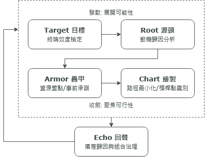

一個持續運作的個人決策治理系統，記錄它的演進過程。
學生時代，初次六何法相遇，便深深地被驚艷。
五個W一個H，像是數道鮮活的燈光，投映在本該模糊的目標上，三明三暗，模糊的舞台瞬間清晰，角色人物、場景脈絡、道具都有了，我就像個引頸期盼的觀眾，等著好戲開鑼。
我不禁心想，原來這樣平平無奇的方法，竟然是如此生動又好記，好似將一本厚厚的設定集濃縮成最核心的六個問題。老師很用心地做了簡報，用雷射筆一面對這六個詞畫圈，一面告訴我們這種學習方式的優點，可以促進思考爾爾。直到我看見老師按了下一頁，舉出了例子，心頓時涼了半截。
Who: 全班同學； What: 班遊； Where: 陽明山； How: 搭車前往。
一個如此活靈活現的架構，就這樣安上了與它不襯的外裳，縱使再多采多姿，也只顯得骨架瘦薄。年幼的我以為這就是它的結局。
成年後，巧遇了SMART原則。長官是信奉效率至上的人，訂定目標時，都明確地指示要以SMART原則評估。這對於不善常計畫的我來說，宛如抓住暴風中的桅桿，明確有理，只要老實一步一腳印填填看，便能有一個明確的方向前進。
真的是這樣嗎？
在往後的很多歲月裡，每一次我執起筆，想擬一段計畫，我總會想到SMART原則。那種明確精實幹練的原則，就好像一個有條不紊的機器人管家，為你打點了一切。但每一次嘗試，計畫不是淪為空殼，除了寫進結算報告之外毫無用武之處，不然就是只進行了不到五分之一便棄之不顧，有一天整理時，忽然在某個塵封的資料夾中找到它。
原諒我這一生不羈放蕩愛自由。
後來我花了很多時間反思自己的失敗，不是說這個原則架構無效，而是它並不適用於我。對低自律性、高開放性的人來說，無疑地這種全方位鎖死的模式是一種毒藥，不僅限縮了想像，更在荼毒我的心理健康。我開始思考，是否能有一種完全個人化的工具，能夠幫助我釐清計畫、推動計畫？
於是TRACE循環架構就這樣慢慢磨出來了。
我將目標釐清的過程區分為四個項目，再由最後一項Examinate進行階段性計畫檢驗。每一項透過三個具有開放式想像空間的問題去釐清思考，並透過發散→收斂的模式，以符合我的思維方式建構出模型。
比起死板地去問，後續效益是什麼、成本為何等精準化詞彙，我花費了很多時間去兼容跨域語言與情境思考，一筆一筆篩選最有「感覺」的問題，才最終形成了這個版本。

它是不是能對其他人也起到作用，坦白說我不清楚。但我確信它是更適合我的版本，也已經推動了從不做計劃的我前進了一段時間。
也許我渴望的，不只是激勵自己進行計畫，更是對幼年的我的一個回應：我要為那些動人的原石找一個更適宜它的結局。
Kyle 2026.07.12